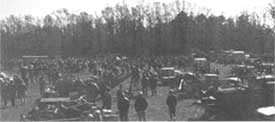
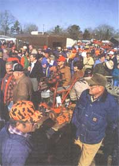
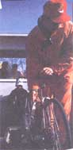
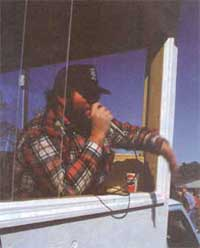
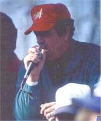
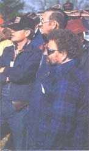
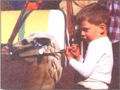

Issue # 131 - April/May 1992
Two men, dressed respectively in camouflage and dirty denim, stood on opposite sides of an aging plow, oblivious to the crowd around them. Folks milled and spoke with growing expectation until the silken voice of auctioneer Robert Earl Lee floated over them. In one breath, it went something like this: "All right ladies and gentlemen, here we have a four-bottom Allis-Chalmers plow good as new, looks a little rusty but with some W-D 40 and a little elbow grease she'll be ready to go in the spring, now who'll start me off with fifty dollars, fiftydollarbidfiftyfiftyfiftywho'llgivemefifty..."
The bids started coming in as Lee worked the crowd from a perch on the back of his pickup truck. One man bid with his hand, another bid with a nod of his head. It went back and forth between them in $10 increments - a test of wills and pocket depth. At $150, it went no further.
After 20 years of calling auctions, Robert Earl Lee was quick to read the signs. The hesitation, the look to the ground, the turn away. He had 900 more things to sell. He was ready to move along. "I got one-fifty, one-fifty who'll give me sixty, one-fifty, who'll give me sixty, sixty,sixty-dollar bid, one-fifty once, one-fifty twice, sold for a hundred-fifty dollars. Get his number fellows and let's move on."
"That was a good price," said my cousin Henry Long, a farmer from Northampton County, North Carolina, just south of the Virginia line. We got up at 5:30 that morning to get to the sale in Trenton on time because Henry was looking for a good disk, cheap.
Henry loves an auction. Some people like to buy things new and shiny, wear the newness off them themselves - they deem used equipment as just another person's problem ready-made to land in your lap.Not Henry. He's a practical man who sees opportunity knocking, a chance to pick up a needed or presumably needed item at a deal, or even a steal.
But it's a risky business. The chances of getting taken are, I'd venture, 50-50. But there are secrets to the art of the auction that will improve those odds. A sharp eye and a steady heart don't hurt - but I thought I'd hang around with Henry and a few others, observe, be quiet, and learn a few things about a cherished American tradition.
The Trenton sale provided the perfect schoolroom. For the last 17 years, farmers from the flat tobacco lands of Jones County and its neighbors have brought their used trucks, tractors, and tillers to a fairground beside an old mill pond in the heart of eastern North Carolina. They pay a $1 registration fee and 10% commission on the sales price - up to $100 - with the proceeds going to the Trenton Volunteer Fire Department and the Trenton Rescue Squad (last year's sale generated about $10,000 for the department, according to Jones).
When we drove up to the fairground that morning, all 907 items - ranging from a child's rocking horse to a 150-horsepower, four-wheel-drive John Deere tractor - were parked in neat rows in the field. Henry has two fundamental tenets of the auction that he was quick to impart. "You need to need what you are buying, number one," Henry said. "And you need to know about what you're buying, too. If you don't, you can get hurt. I've got a 5000 Ford tractor I've been using for 15 years now. I've had not a bit of trouble with it, but I've had to perform enough maintenance on it to get an idea of the shape of one."
Henry farms on the edge of the escarpment that divides the clay soils of the Piedmont from the sandy loam of the coastal plain. He was looking for a heavy breaking disk (a.k.a. a disk-harrow), an implement that holds two rows of scalloped-edged, steel disc blades at angles to one another so that when they are pulled behind a tractor, they will take a deep bite into Henry's heavier soils. A new disk like that would cost $4,000 to $5,000. Our budget was $200 to $400, depending on the size and condition of the implement. Two auction trucks were creeping down the rows of items, so Henry and I split up to cover more ground.
The assortment was enormous, a pack-rat's paradise. In one fifty-yard stretch I found stereo speakers, hog feeders, used truck tires, broken motorcycles, mule collars, and four floodlights that looked like enormous blue beach balls. The people were into it, too. There was an excitement, a spark to the air like the opening day of a state fair. I watched a weed-eater sell for $5, a lawnmower for $20. A dishwasher went for $10. A thin young woman with a little boy at her side bought three old metal gas pumps for $5 a piece. When I asked her why she bought them, she looked at me, surprised. "I don't know," she said with a laugh. "It was a good price." Such is the seduction of a sale.
Along about the third row I found our grail - a 16-foot offset disk that looked as if it were built to break land into the next ice age. There was just enough blue paint remaining to identify it as a Ford, and just enough rust to make it attractive to Henry and perhaps bring the price down to our range. Tickled with my find, I headed for the nearest auction truck, scanning the crowd for Henry.
When I reached the truck, a group of men were standing around three or four hydraulic jacks and the bidding was starting to heat up. I immediately recognized Louis Creech, the junkyard baron of Browntown, North Carolina, a crossroads community in neighboring Lenoir County. Creech is a trader by heart and profession, one of a number of men who cruise equipment sales like sharks amongst shad, gobbling up cheap items for resale.
Over the last 20 years he has bought and traded for enough parts and equipment to fill about 15 acres with just about everything mechanical imaginable. In our quest for a disk we had stopped by his yard on the way to the sale that morning and found him to be something of a philosopher king, discoursing on capitalism, communism, and the decline of the American work ethic.
"Some people might call me a pack-rat," Creech told us that morning as we stepped along the muddy road that coursed through his kingdom. "I don't believe it. If it's sitting around it doesn't do me any good. I need to move it. Once you get a big wheel rolling, it's hard to stop. When you go to a sale, you can't think about the other man. He's got to look out for his self. You got to think about the equipment, what it's worth to you."
Sensing that I was standing in the shadow of a true professional, I asked Creech for a few tips about getting a deal at an auction. "If you're really interested, you've got to go a day ahead," he said. "Look at the piece good and find out who it belongs to and find out if he's a hustler."
When it comes down to the bidding, everybody has their own technique and style. Robert Earl Lee is also a professional and a Jones County local who grew up right in Trenton. His home is still there, although he travels most of the year working the tobacco markets of Kentucky and Tennessee.
He controls the pace of the sale and adds that hypnotic voice. "We try to get people enthusiastic about the sale," Lee says. "As much as we've got to sell, I tell the other fellows to sell it fast and move on. Once the crowd learns the speed, they'll keep up with you. There are people who will hem and haw and can't make up their minds and if you go fast it helps bring out the bid." Lee had hints for the buyer as well and it is interesting to note the difference between the advice of an auctioneer and that of a trader. For example:
Lee: "Pick out a place where the auctioneer can see you."
Creech: "Don't just stand there and watch the auctioneer. If he watches you he can read you pretty well and know if you're excited. The less people see you the better off you are. You want to be back as far as you can and still be visible."
Lee: "I tell people don't be bashful. Throw your hands up so we can see 'em."
Creech: "If you stick your hand up you're too visible. I kind of tilt my head back a bit. A quick tilt backwards looking at the auctioneer."
They both agree on one thing, though: Let somebody else make the opening bid. A lot of people, says Lee, will bail out early. And, of course, always keep an eye on your bottom line.
This is easier said than done. Auctions have the atmosphere of a horse track, they get the gambler's blood boiling. But there are times when that spell is broken and the piece goes cheap. Henry told me about a sale he and my Uncle Billy went to a few years ago. Henry was looking for a hay baler and had agreed to bid up to $2,500 for one. He found a New Holland in near mint condition and staked out a spot. But just before the bidding started, Henry bumped into my father, who was milling around the sale. They exchanged hellos, and Henry explained that he was getting ready to bid on the baler. My father, being generous, then lobbed in a monkey wrench. "Don't do that, Henry. I've got one at home I'll give you." (At the time Henry had no idea that our baler was a post-Depression relic that never quite tied the bales right.)
Henry was in a quandary. Before him sat a
good-looking baler that he hoped to get
cheap.
Henry was in a quandary. Before him sat a good-looking baler that he hoped to get cheap. But on the other hand there was a free baler he'd never seen. He decided to hold his bid and keep quiet. The bidding went slowly and Uncle Billy kept looking at Henry from across the crowd as if he had gone mad. The bid reached $1,300 - well below their budget - and it looked like it was going to go for that. Finally, Uncle Billy, who was nearly blue in the face at this point, gestured across the baler at Henry and yelled, "Bid, dammit!" Henry instinctively threw up his hand.
"People were taken aback," Henry said, smiling. "They didn't know what was going on and they didn't want any part of it. It was just enough to throw them off. So we picked it up for $1,300 and it ran for years." Henry was leaning against a pale blue '78 Oldsmobile ("Sold! For $800!") when I found him and told him about the disk. He said he'd seen it and it was exactly what he wanted. All we had to do was wait for it to come up. And have a little lunch. Earlier I had met Worth Williams, a 69-year-old retired farmer and employee of the North Carolina Department of Weights and Measures. He had driven two hours from his home in Wilmington, North Carolina, not just for the sale but for "just about the best barbecue in the county." He figured half of the 4,000 people at the sale came for the equipment, the other half came to eat.
"The county?" said Henry "Knocker" Moore, when I gave him Williams' critique, "This is the best barbecue in the South!" Moore and a dozen other farmers and firemen were standing around a pole barn on the back side of the field where the long concrete-block barbecue pits were being tended. A half-dozen steel drums smoldered nearby, slowly turning cord after cord of split hickory and oak into coals.
These volunteers had laid the first hog on at 3 o'clock that morning, the first chicken at 7:45. At the first sale in 1974 they cooked three hogs. This year they cooked 26, then sliced them and diced them into 3,300 pounds of the finely chopped, vinegar-and-pepper-seasoned barbecue that has made this part of the world famous. In addition, they cooked 550 chicken halves and provided 1,000 pounds of slaw, 1,000 pounds of potatoes, 800 rolls, and 10,000 hushpuppies - the bits of fried cornmeal that tend to melt in your mouth and spread immediately to your girth. They started selling plates at noon for $4 apiece, and by 1:30 the barbecue was gone.
The blue disk was in the last row to be sold so we had some time to kill. Walking around, I saw a young couple buy an old wagon wheel for $35 ("I've seen 'em go for $150 at other sales," the husband said proudly). I saw five hand-held tobacco setters, sort of a yard-long funnel with a handle for transplanting seedlings, sell for $45 apiece. Lee told me later the owner expected to get only $10 for them.
Farther along, looking out of place amongst the tractors and horse trailers, I saw a little boy riding an old rocking horse. It was a plastic buckskin attached by springs to a metal frame. The boy spurred his mount faster and faster, clutching the reins, oblivious to the mirth of the grownups around him. No one had the heart to bid against his mother, who turned out to be the gas-pump lady. She picked it up for next to nothing.
Finally the auction truck pulled in front of the big blue disk. Henry was leaning casually on a utility trailer next to it, in clear view but inconspicuous. The bill of his cap was pulled down low and serious looking. Robert Earl Lee started the bidding at $200 and let the crowd have it, but the crowd was having none of it. It was a white elephant in this land of small farms and wet, sandy land. Henry bid $225 and there were no other bidders. A slow smile creased his face as Lee sold it to him for a relative song. It didn't last long.
"Hold it, folks. The owner says he's got to have a $1,000 bid for this big disk. No sale." Unlike absolute auctions where everything goes at the top bid, the owners at the Trenton sale have the right to reject any and all offers. Other sales allow the owners to bid on their own equipment, in effect buying it back if they don't like the price. This infuriates traders like Creech, who calls that kind of dealing "a ratty game." Trenton, on the other hand, was a "clean" sale.
The owner of the disk, a tall, elderly gentleman, was standing nearby and he and Henry had a little talk. Henry got him down to $800, but the man wouldn't budge below that. They exchanged business cards, both hoping that the other would come to his senses and see the true value of the disk in the near future.
People were packing their purchases as the weak winter sun sank toward the mill pond. On our way back to the truck, we saw the rocking horse and the little boy sitting in the back of a pickup filled with the spoils of the day. Henry, on a whim, walked up to the gas-pump lady and asked her how much she'd take for the horse.
"Mister, you're going to have to ask him," she said, nodding toward her son. "But I warn you, I don't think you're going to have enough money." Henry laughed and said he figured she was right. We walked to the truck empty-handed, no poorer, no richer, but wiser in the ways of the auction.
|
 The chances of getting taken at an auction are about 50-50. But there are secrets that will improve those odds. |
 It is interesting to note the difference between the advice of an auctioneer and that of a trader: whether to stand where you can be seen clearly; whether to put up your hands clearly or make a more subtle gesture. |
 |
|
 |
 |
 |
|
 |
|
|